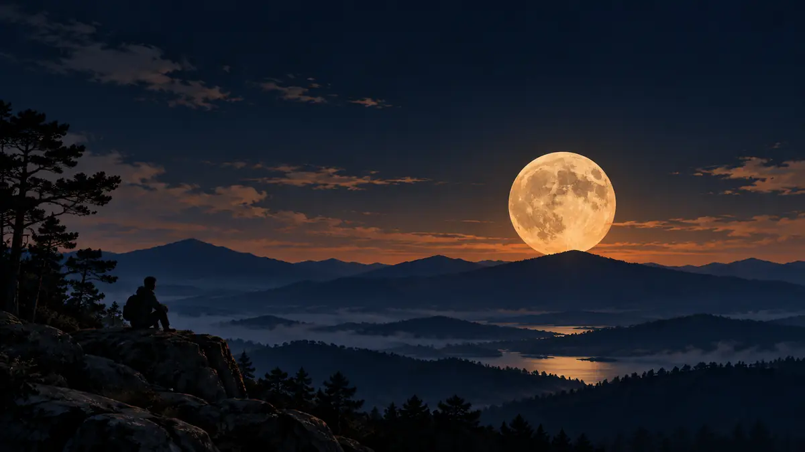

지평선의 달은 왜 유난히 커 보일까요?
산과 건물 위로 떠오른 달이 커 보이는 ‘달 착시’를 직접 확인하고, 실제 크기 변화와 대기의 색 변화를 구분해봅니다.

커진 달이 아니라 커 보이는 달이에요
보름달이 산마루나 건물 위로 막 떠오를 때 유난히 거대해 보인 적이 있나요? 높은 하늘로 올라간 뒤에는 같은 달이 작아진 듯 느껴집니다. 하지만 같은 줌 설정으로 두 모습을 찍어 가로 폭을 비교하면 달 원반은 거의 같은 크기로 기록됩니다. 지평선의 달이 커 보이는 현상은 대기가 확대해서가 아니라 우리 눈과 뇌가 만드는 ‘달 착시’입니다.
달이 지구 둘레를 타원 궤도로 돌기 때문에 실제 겉보기 크기는 조금씩 달라집니다. 다만 한 번 떠오르는 동안 지평선과 높은 하늘에서 느끼는 큰 차이는 그 작은 거리 변화로 설명되지 않습니다. ‘슈퍼문’과 달 착시는 서로 다른 이야기예요.[1]
주변 풍경이 크기를 판단하는 눈금을 만들어요
지평선 가까이에는 산, 나무, 건물처럼 크기를 짐작할 만한 물체가 함께 보입니다. 뇌는 이런 거리 단서를 이용해 하늘의 깊이와 달의 크기를 해석합니다. 높은 하늘의 달은 비교할 대상이 거의 없는 빈 공간에 홀로 놓이므로 더 작게 느껴질 수 있습니다.
이 설명이 중요한 단서이지만 아직 완전한 답은 아닙니다. NASA는 우주비행사도 뚜렷한 전경 없이 달 착시를 본 사례가 있어, 수천 년 동안 알려진 현상의 정확한 원리를 하나로 확정하지 못했다고 설명합니다. 따라서 ‘건물이 달을 실제로 크게 만든다’고 단정하기보다 시각 정보 처리와 관련된 착시라고 이해하는 편이 정확합니다.[1]
손가락과 사진으로 직접 확인해보세요
관측할 때는 팔을 쭉 뻗고 손톱을 달 옆에 대어 겉보기 폭을 비교해보세요. 달이 높은 하늘로 이동한 뒤 같은 자세로 다시 보면 생각보다 차이가 작습니다. 종이관을 통해 주변 풍경을 가리고 보는 방법도 있어요. 비교 대상을 지우면 커 보이던 느낌이 줄어들 수 있습니다.
사진으로 확인하려면 같은 카메라와 같은 줌을 유지하고, 지평선 부근과 높은 하늘의 달을 각각 찍습니다. 긴 망원렌즈로 먼 풍경과 달을 함께 확대하면 둘 다 화면에서 크게 보여 인상적인 사진이 되지만, 그것이 대기가 달만 확대했다는 증거는 아닙니다. 안전한 장소에서 달의 고도와 촬영 설정도 함께 기록해보세요.[1]
색과 모양의 작은 변화는 실제예요
크기와 달리 지평선의 달빛이 노랗거나 주황빛을 띠는 현상은 대기와 관련이 있습니다. 달빛이 낮은 고도에서 더 긴 대기 경로를 지나면서 짧은 파장의 푸른빛이 더 많이 흩어지고, 상대적으로 붉은빛이 남기 때문입니다. 먼지나 오염이 색을 더 짙게 만들 수도 있습니다.
대기는 약한 렌즈처럼 작용해 아주 낮은 달을 세로로 조금 납작하게 보이게 할 수도 있습니다. 하지만 가로 폭을 크게 키우는 설명은 아닙니다. ORBIT 관측 가이드에서 달 뜨는 시각을 확인한 뒤 직접 비교해보세요. 기억할 한 가지는 지평선 달의 거대한 느낌은 진짜지만, 달 원반이 그만큼 커진 것은 아니라는 사실입니다.[1]
이 이야기를 확인한 자료
- NASA Science · The Moon Illusion: Why Does the Moon Look So Big Sometimes? ↗자료 확인 2026.10.09 · 원문 새 탭
자료의 날짜와 적용 범위를 함께 확인해주세요. 오류 제보하기 →